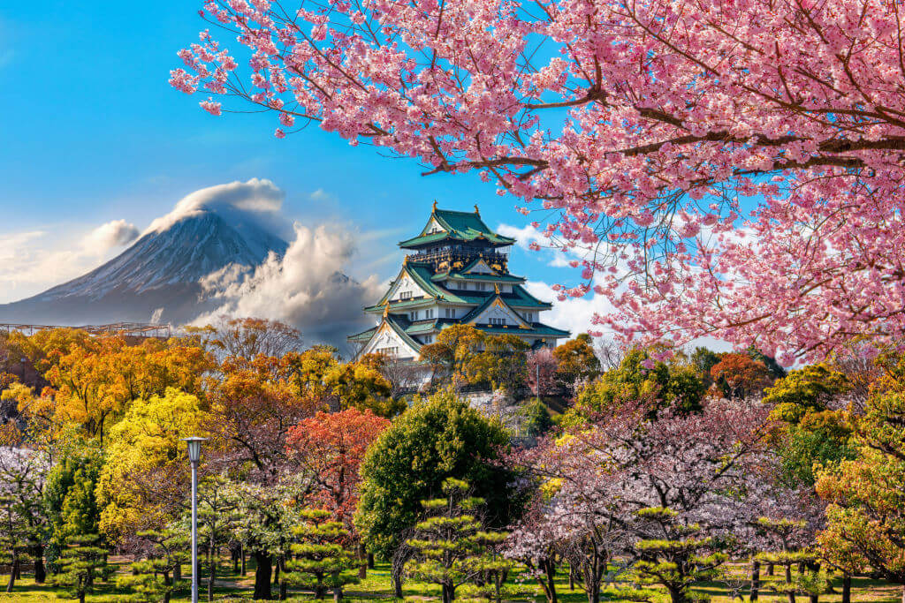
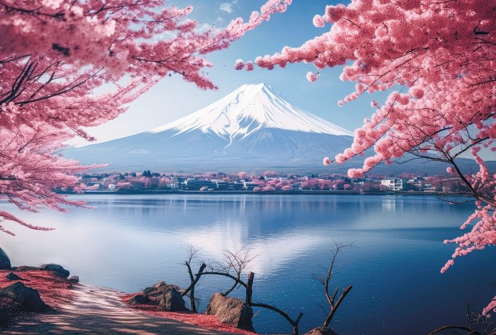

Filip
Tokio je glavni grad Japana, tehnološki napredan, gust naseljen, poznat po tradiciji, modernoj arhitekturi, hrani i kulturi.

Osaka je živahan grad u Japanu, poznat po kulinarskoj sceni, istorijskim znamenitostima, zabavnim parkovima, trgovima i ljubaznim ljudima.
Kyoto je japanski grad bogate istorije, poznat po drevnim hramovima, tradicionalnim vrtovima, gejšama, čajnim ceremonijama i očuvanoj kulturi samuraja.

Planina Fudži je najviši vrh Japana, sveti simbol, poznat po prelepom obliku, planinarenju, umetnosti i inspiraciji.
Okinava je japanski arhipelag, poznat po tirkiznim vodama, plažama, ronjenju, tradicionalnoj kulturi, gusukus dvorcima i jedinstvenoj kuhinji.

Yakushima je ostrvo u Japanu, poznato po drevnim šumama, stogodišnjim kedrovima, planinarenju, bogatoj fauni i prirodnim lepotama.